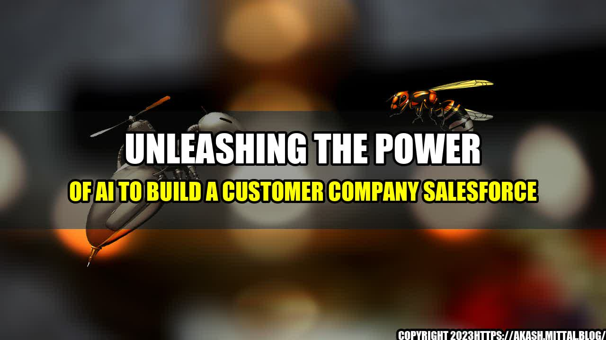

The Power of AI in Customer Service

It was a typical Monday morning when Chris received an email from one of his loyal customers. The email stated: "Chris, I just wanted you to know how much I appreciate the service you've given me over the years. The personalized attention and quick response time really sets your company apart from the competition."
Chris was thrilled to receive such positive feedback, but he knew that he couldn't take all the credit. He had built his company's reputation on providing exceptional customer service, and he had done so with the help of AI.
The rise of AI technologies has transformed the customer service industry, allowing companies to automate mundane tasks and provide personalized, human-like interactions with their customers. With AI, Chris had been able to create a customer-centric company that put the needs of the customer first.
The Benefits of AI in Customer Service
AI has given companies the ability to collect and analyze vast amounts of data in real-time, allowing them to make smarter business decisions and provide better customer experiences.
- Personalization: By collecting data on a customer's behavior and preferences, AI can create personalized experiences that feel more human-like.
- Automation: Companies can automate tasks like answering simple questions or routing calls to the right department, freeing up customer service representatives to focus on more complex issues.
- Efficiency: By automating tasks, AI can help reduce response times and increase the speed at which issues are resolved.
Companies that have implemented AI technologies in their customer service operations have seen significant improvements in key metrics.
- Pandora, the popular music streaming service, saw a 25% increase in customer satisfaction after implementing a chatbot to handle customer inquiries.
- Citibank has used AI to improve customer retention rates by 10%.
- Capital One used AI to create a virtual assistant that was able to handle 2,000 conversations simultaneously, resulting in a 30% reduction in customer wait times.
How to Implement AI in Your Customer Service Strategy
As with any new technology, implementing AI in your customer service strategy requires careful planning and coordination.
- Identify the pain points in your current customer service strategy and determine how AI can help improve those areas.
- Choose the right AI technology for your needs. There are a variety of AI technologies available, from chatbots to virtual assistants. Determine which technology is best suited for your business and customer needs.
- Train your customer service representatives to work alongside AI technologies. AI is not meant to replace human interaction, but rather to enhance it. Ensure that your representatives are comfortable working with AI and understand how it can improve their jobs.
Conclusion
AI has the power to transform the customer service industry, allowing companies to provide personalized, efficient, and effective experiences to their customers. By implementing AI technologies in their customer service strategies, companies can improve key metrics like customer satisfaction and retention rates.
- Personalization
- Automation
- Efficiency
References
- https://www.salesforce.com/blog/2019/06/ai-customer-service-examples.html
- https://www.forbes.com/sites/blakemorgan/2019/01/16/10-companies-using-ai-to-revolutionize-customer-service/#56a9f5f238b1
- https://www.cio.com/article/3263540/how-to-get-started-with-ai-in-customer-service.html
Hashtags
- #AIinCustomerService
- #CustomerSatisfaction
- #Personalization
- #Automation
- #Efficiency
Category
Technology
Curated by Team Akash.Mittal.Blog
Share on Twitter Share on LinkedIn